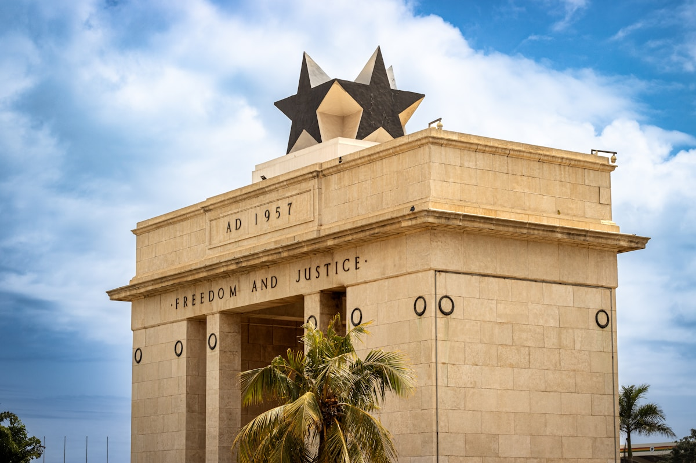
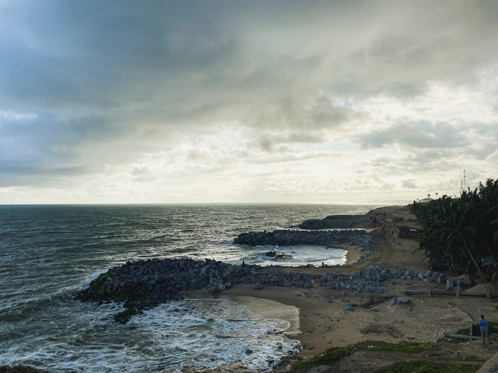
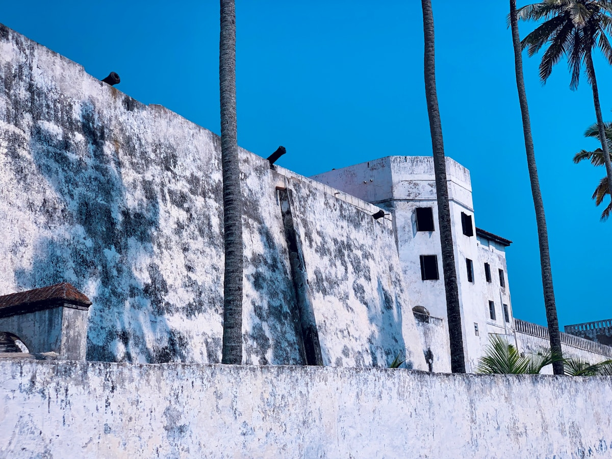
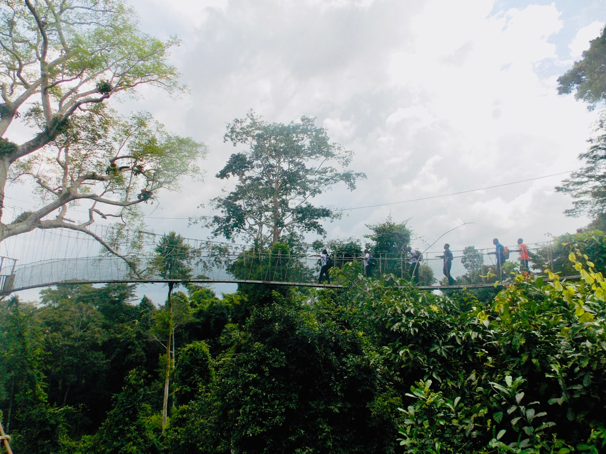
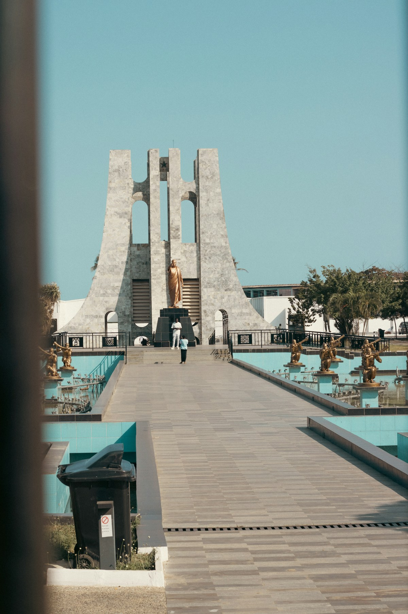
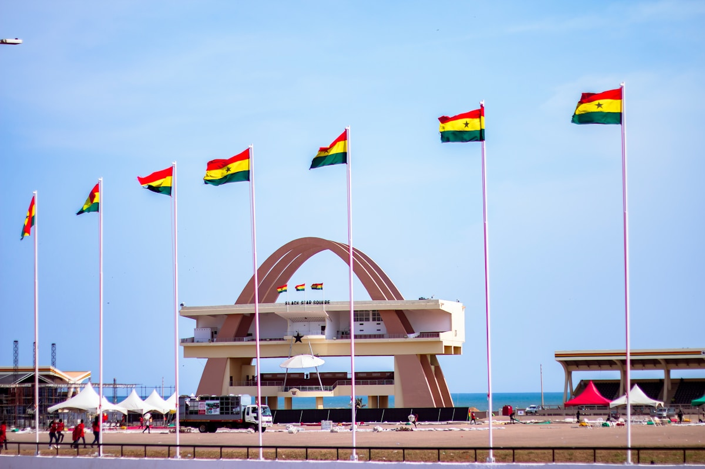

| 事项 | 结论 |
|---|---|
| 事项 | 结论 |
| 签证（最关键） | 中国内地护照需提前办加纳电子签：2026-05-25 起统一走 evisa.immigration.gov.gh（非非洲护照约 260 美元/单次，标准 96 小时出签，停留 30 天）；无落地签通道，签证到手再买机票 |
| 推荐方案 | 7 天：阿克拉 2 天 → 海岸角&埃尔米纳 2 天 → 库马西 2 天 → 返程 1 天 |
| 行程链 | 阿克拉 → 海岸角 → 埃尔米纳/卡库姆 → 库马西 → 阿克拉返程 |
| 预算（人均） | 经济 10000–16000 ／ 标准 18000–28000 ／ 舒适 40000–60000（人民币） |
| 三件提前事 | ① 办电子签（260 美元提前 1 周）② 打黄热病疫苗（入境必查小黄本）③ 订阿克拉—库马西内飞或包车 |
| 季节提醒 | 12–2 月凉爽旱季最佳（Detty December 12 月派对季很热闹）；3–4 月最热；5–10 月雨季出行带雨具 |
| 支付 | 加纳塞地（GHS）现金为主，大城市可刷卡；1 元 ≈ 1.9 加纳塞地 |
以下为 7 天 6 晚的推荐节奏：阿克拉起步，包车沿海岸西行到海岸角/埃尔米纳，再北上库马西，最后内飞回阿克拉。每日移动 ≤4h，城堡与树冠步道安排在上午凉快时段。
| 日期 | 行程 | 过夜地 | 主题 |
|---|---|---|---|
| D1 抵达阿克拉 | 转机约 18h 抵达，入住奥苏区，拉巴迪海滩日落 | 阿克拉 | 抵达日 |
| D2 | 黑星广场+独立拱门 → 恩克鲁玛纪念公园 → 马科拉市场 | 阿克拉 | 首都人文日 |
| D3 | 阿克拉→海岸角（约 3h），海岸角城堡深度参观 | 海岸角 | 驶向城堡 |
| D4 | 埃尔米纳城堡 + 卡库姆树冠步道 | 海岸角 | 城堡与雨林 |
| D5 | 海岸角→库马西（约 4–5h），曼希亚宫+文化中心 | 库马西 | 北上王都 |
| D6 | 博恩维雷肯特织布村 + 克杰迪亚市场 | 库马西 | 阿散蒂文化日 |
| D7 返程 | 库马西✈阿克拉（内飞 45min）转机，阿克拉✈北京 | — | 收尾 |
以下为 7 天全程的逐小时执行时间线，可当作「当天打开照着走」的清单。标注 ※ 的可选项视体力与天气取舍。
| 时间 | 事项 |
|---|---|
| 全天 | 北京✈（经巴黎/迪拜/亚的斯亚贝巴转机约 18h）✈阿克拉科托卡国际机场 |
| 13:00–15:00 | 入境：出示电子签+黄热病小黄本，缴机场基础设施费（约 100 美元），换塞地现金 |
| 16:00–18:00 | 入住奥苏区（Osu，游客友好区），用 Uber/Bolt 打车 |
| 18:30–19:30 | 拉巴迪海滩 Labadi Beach：大西洋日落+当地乐队 |
| 20:00 | 晚餐：奥苏区餐厅 |
| 时间 | 事项 |
|---|---|
| 08:30–10:30 | 黑星广场/独立拱门（免费）：加纳独立纪念地标，五星黑星塔 |
| 11:00–12:30 | 恩克鲁玛纪念公园（门票约 20–30 塞地）：首任总统陵墓+博物馆 |
| 13:00–14:00 | 午餐：阿克拉 Jollof Rice 或 Fufu 汤 |
| 14:30–17:00 | 马科拉市场 Makola Market：肯特布、蜡染布、手工艺品，砍价从 1/3 起 |
| 18:00 | 晚餐：奥苏区烤鱼/街头小吃 |
| 时间 | 事项 |
|---|---|
| 08:30 | 阿克拉出发（约 150km，3h，沿 N1 国道） |
| 11:30 | 抵达海岸角 Cape Coast，午餐（海鲜/当地菜） |
| 13:00–16:00 | 海岸角城堡（外国成人约 100–120 塞地，含英文导览 1h）：地下囚室、Door of No Return 不归之门——全程最沉重也最值得的一站 |
| 17:00–18:30 | 海边漫步+殖民老城，晚餐海边烤鱼 |
| 时间 | 事项 |
|---|---|
| 07:30 | 早出发先到卡库姆国家公园（清晨鸟多、人少） |
| 08:00–10:00 | 树冠步道 Canopy Walk（外国成人约 130 塞地+门票约 35 塞地）：7 座吊桥、330m 高树冠，雨林树顶漫步 |
| 10:30–12:30 | 转往埃尔米纳城堡（约 15km，外国成人约 80–100 塞地）：1482 年建的撒哈拉以南最老欧洲建筑，渔民码头彩色木船 |
| 13:00 | 埃尔米纳午餐 |
| 15:00–17:00 | 回海岸角，自由活动或参观阿森·曼索（Assin Manso 奴隶河，可选） |
| 时间 | 事项 |
|---|---|
| 08:30 | 海岸角出发（约 240km，4–5h，山路+主干道） |
| 13:00 | 抵达库马西 Kumasi，午餐 |
| 14:30–16:30 | 曼希亚宫博物馆 Manhyia Palace（门票约 20–40 塞地）：阿散蒂国王居所+王室历史 |
| 17:00–18:30 | 库马西文化中心/编织村或市区漫步 |
| 时间 | 事项 |
|---|---|
| 08:30–11:30 | 博恩维雷 Bonwire 肯特织布村（免费进村，参观+讲解约 20–40 塞地）：看手工织机织肯特布，可买布料/成品 |
| 12:00–13:30 | 库马西午餐 |
| 14:00–17:00 | 克杰迪亚市场 Kejetia Market（西非最大市场之一）：织物、药材、手工艺品，体验「西非菜市场的中心」 |
| 18:00 | 晚餐：库马西当地餐厅 |
| 时间 | 事项 |
|---|---|
| 08:00–09:30 | 退房，库马西✈阿克拉（内飞 45min，Africa World Airlines 约 80 美元）或 5h 车返 |
| 10:30–12:30 | 抵达阿克拉机场，办登机 |
| 13:00–15:00 | 机场免税店补货（可可、腰果、肯特布） |
| 16:00–次日 | 阿克拉✈（转机）✈北京，入境到家 |
必去（必去）/ 顺路（顺路）/ 可跳过（可跳过）。

必去
必去
顺路
顺路
顺路图片为 Unsplash 主题图（黑星广场、海岸角城堡、埃尔米纳城堡、卡库姆树冠、肯特织布等均为加纳实景或同主题），用于页面配图。更多免费看点：拉巴迪海滩、阿克拉国家博物馆、阿森·曼索奴隶河、库马西文化中心。
点击左侧节点可在地图上定位；点击地图 marker 会高亮对应节点。坐标为 WGS-84 转 GCJ-02 纠偏后标注。
以下为单人、不含购物的估算，人民币计价；出发地基准北京。汇率按 1 元 ≈ 1.9 加纳塞地、1 美元 ≈ 7.2 元估算。往返机票按淡季转机 7000–10000 元计，另含机场基础设施费约 100 美元与电子签约 260 美元（折人民币约 2600 元，已计入杂费）。
| 项目 | 经济（10000–16000） | 标准（18000–28000） | 舒适（40000–60000） |
|---|---|---|---|
| 往返机票 | 转机往返 7000–10000 | 直挂转机 10000–14000 | 灵活票/商务 18000–26000 |
| 境内交通（包车+内飞） | 拼车+STC 大巴 1200–2000 | 包车+内飞 3000–4500 | 专车+优先航班 7000–10000 |
| 住宿（6 晚） | 旅馆/民宿 300–500/晚 | 中档酒店 700–1200/晚 | 星级/海边度假 2000–3000/晚 |
| 门票+活动 | 基础门票约 700–1200 | 含双城堡+树冠 1800–3000 | 含私人向导+全程 4500–7000 |
| 餐饮（7 天） | 街摊+快餐 1000–1800 | 餐厅+街摊结合 2500–4000 | 全餐厅+酒水 6000–9000 |
对野生动物感兴趣可延长 4–5 天北上莫莱国家公园 Mole（加纳的「小非洲」）：大象、水牛、羚羊游猎，全包营地 2 晚；从库马西飞塔马利（约 1h）再车 3h 进园。适合 12–14 天深度线，需要增加预算 8000–12000 元。
带娃推荐阿克拉 3 天（拉巴迪海滩+国家博物馆+市中心）、海岸角 2 天（双城堡分两天看避免沉重疲劳）、砍库马西；全程包车+网约车，城堡导览选英文短场。12 月 Detty December 派对氛围浓但酒店贵，淡季 3–4 月出行性价比更高。
| 方式 | 时长 | 参考价 | 备注 |
|---|---|---|---|
| 转机（唯一） | 北京→阿克拉约 18h | 往返 7000–14000 元 | 经巴黎/迪拜/亚的斯亚贝巴/伊斯坦布尔 |
| 直飞 | — | — | 中加暂无直航 |
| 国际铁路 | — | — | 无陆路铁路连接中国，只能飞机 |
| 区域 | 价格/晚 | 优点 | 短板 |
|---|---|---|---|
| 阿克拉·奥苏区 | 经济 300–550 / 标准 700–1300 | 餐厅酒吧多，网约车方便 | 旺季派对季贵 |
| 阿克拉·机场区 | 标准 600–1000 | 转机过夜方便 | 距市区远 |
| 海岸角·城堡附近 | 经济 350–600 / 标准 800–1500 | 步行到城堡，海边 | 房间数量少 |
| 埃尔米纳·渔港 | 标准 800–1500 | 城堡码头景观 | 路窄停车难 |
| 库马西·市区 | 经济 300–500 / 标准 600–1200 | 离市场王宫近 | 市区嘈杂 |